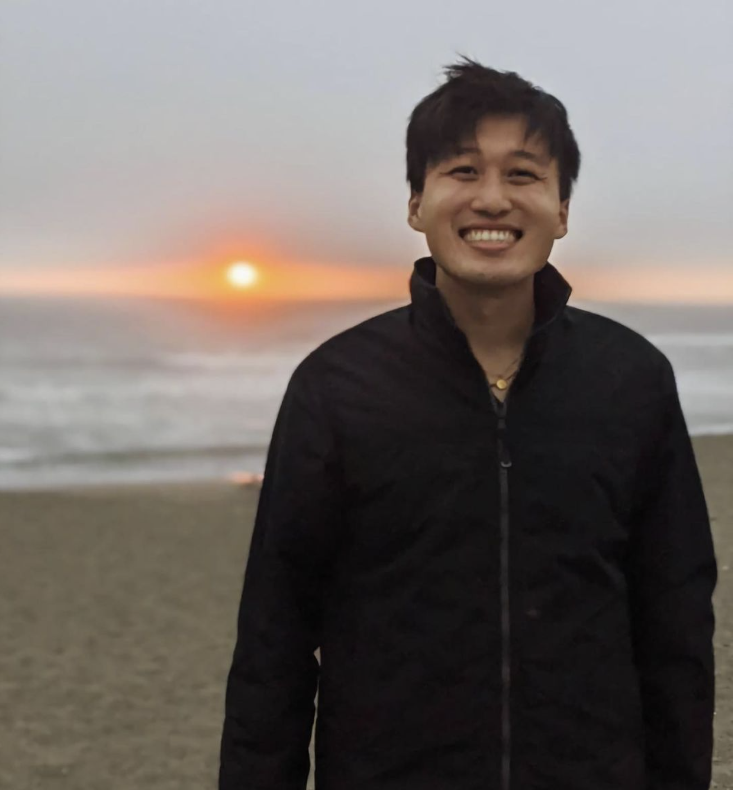

Owen Wang
Computer Vision & Machine Learning Engineer
I am a Computer Vision / Machine Learning Engineer with 7+ years of experience building robust AI solutions. My background is grounded in core tasks like object detection and segmentation, while my recent focus has centered on leveraging modern diffusion-based methods for generative modeling.
I care deeply about the engineering craft. I love writing well-architected, structured code that turns experimental ideas into reliable systems. I enjoy taking state-of-the-art papers and adapting them to new problem domains, and optimizing models for fast inference in constrained, real-world production environments.
Meta Reality Labs Codec Avatars, DataGen
- —Used DiT- and U-Net-based diffusion models to generate 8m+ frames of HMC synthetic datasets, powering downstream avatar models for '26+ ARVR devices
- —Published: GenHMC (arXiv 2025) ↗ — novel method to improve codec avatar encoder's SoTA accuracy + data efficiency via diffusion-generated HMC images
Cruise Perception, Detection Core
- —Boosted multi-task LiDAR perception model training efficiency 5x, driving an estimated $3.8M annual savings by optimizing GT target generation, GPU memory/backprop flow, and hyperparameters
- —Independently led migration of two critical-path LiDAR perception models to a structured, reproducible PyTorch Lightning framework
- —Diagnosed bottlenecks in a multi-platform modeling library developed by 20+ engineers
Meta Reality Labs Holograms
- —Designed and prototyped a real-time neural re-rendering model for AR glasses, refining imperfect 2D inputs due to occlusion and sensor sparsity for remote calling features
- —Led cross-org collaboration (8 engineers) to unify two ML training stacks, cutting research-to-deployment lead time by 4 months
Meta Reality Labs AR Authentic Presence
- —Delivered 3 CV ML models (hand detection/keypoints/gestures, person segmentation, foot keypoints) powering 100k daily AR effects on Messenger, Facebook, and Instagram
- —Optimized inference from 20-25s native to 20-40ms on int8-quantized CPU hardware
- —Owned creation of a 400k+ sample real-world dataset
Stanford University M.S. & B.S. Computer Science
B.S. Computer Science (2018) · M.S. Computer Science (2019)
TA: Convolutional Neural Networks for Visual Recognition (CS 231N), Spring 2019
TA: Probabilistic Graphical Models (CS 228) w/ Prof. Stefano Ermon, Winter 2018-19
CS234: Reinforcement Learning
Open-source study companion for Stanford's CS234 course. 11 detailed lecture notes covering MDPs, Q-learning, policy gradients, imitation learning, and exploration — with KaTeX-rendered math and interactive navigation.
COCO Person Segmentation
Developed "Diamondback," a semantic segmentation model for human body segmentation (CS 191 senior project). Dense convolutional connections with DenseNet-161 encoder for high-resolution predictions on MS COCO.